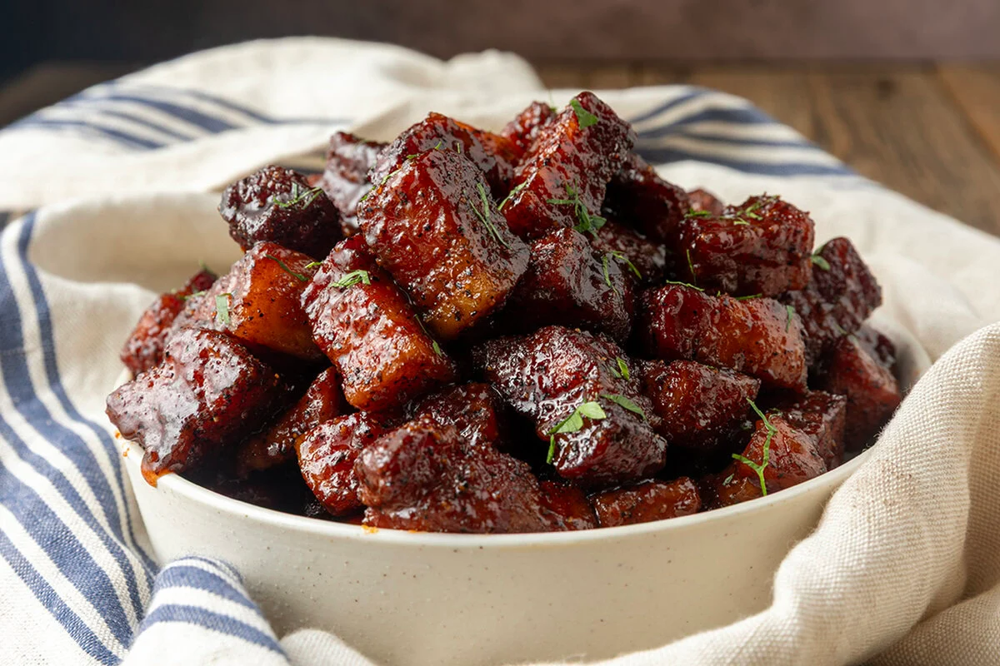
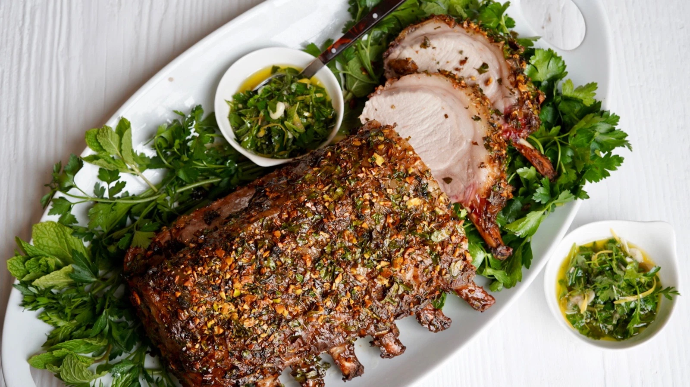
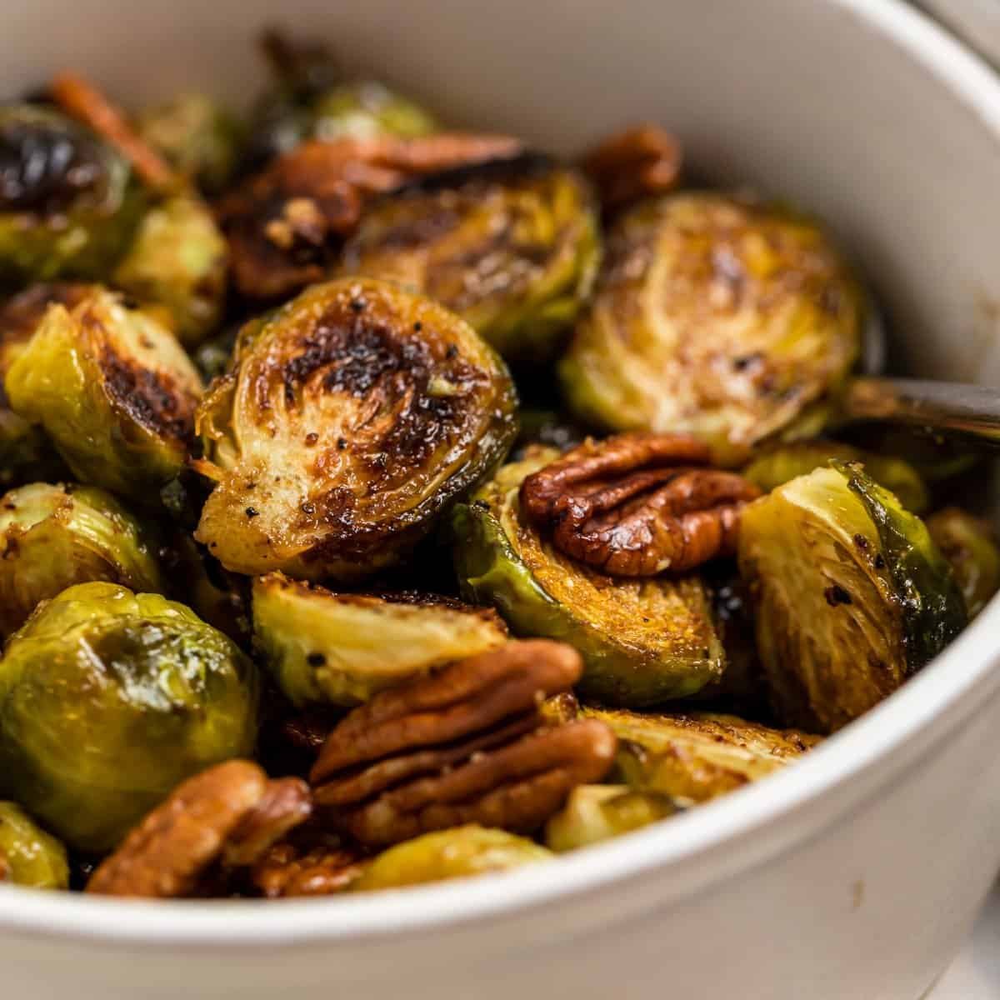

Menu
Appetizers

-
Pulled Pork Sliders
Three pulled pork sliders with Brother Juniper's famous Barbecue Sauce, served with coleslaw on brioche bun
$22.00
-
Pork Belly Bites
Bite sized pork belly cubes glazed with honey and jalapeño slaw
$16.00
-
Loaded Baconed Potato
Baked potato wrapped in bacon, with cheese, scallion, chive, onion, and bacon bit garnishes
$14.00
-
Bacon Fajitas
Uncooked bacon served on sizzling hot coal plate, served with side of breakfast potatoes
$18.00
-
Prosciutto-Wrapped Asparagus
Fresh asparagus spears wrapped in thinly sliced prosciutto, roasted until tender, and served with a creamy parmesan sauce.
$15.00
-
Maple Glazed Pork Bites
Crispy pork belly bites tossed in a rich maple glaze, finished with fresh thyme and a sprinkle of flaky sea salt.
$17.00
Entrees

-
Herb Crusted Pork Chop Rack
Thick cut pork chops with crunchy herb exterior, miso glaze drizzle
$34.00
-
Cherry Miso Pork Tenderloin
Cherry miso glaze on pan-seared 8oz Pork Tenderloin
$32.00
-
Braised Apple Pork Belly
Slowed cooked braised porkbelly with candied apple glaze
$30.00
-
Tomahawk Steak
45oz tomahawk steak smoked for 48 hours and soaked in bourbon
$150.00
-
Red Wine Braised Pork Shank
Slow-braised pork shank cooked until fork-tender in a rich red wine reduction, served over truffle mashed potatoes with roasted root vegetables.
$38.00
-
Garlic Butter Pork Medallions
Pan-seared pork tenderloin medallions finished in a roasted garlic butter sauce, served with creamy mashed potatoes and seasonal vegetables.
$33.00
Sides

-
Truffle Parmesan Fries
Golden fries tossed with truffle oil, freshly grated parmesan, and chopped parsley.
13.00
-
Roasted Garlic Mashed Potatoes
Creamy mashed potatoes blended with roasted garlic, butter, and a touch of cream.
$10.00
-
Seasonal Roasted Vegetables
A colorful selection of seasonal vegetables roasted with olive oil, fresh herbs, and cracked black pepper.
$11.00
-
Balsamic Brussels Sprouts
Crispy roasted Brussels sprouts drizzled with balsamic reduction and finished with toasted pecans.
$12.00
-
Parmesan Risotto
Slow-stirred arborio rice cooked to a creamy consistency with parmesan cheese, butter, and a hint of white wine.
$14.00
-
Honey Butter Cornbread
Warm, golden cornbread served with whipped honey butter for a balance of sweetness and savory flavor.
$9.00